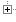

JJack
Jack-to-Java
JJack 0.3
Jack up Java!
Previous versions may be found in the distribution archive on the JJack development site.
You may also want to browse the sources online in the CVS archive.
The distribution archive contains:
File contents in archive jjack-0_3.tgz:
 jjack-0_3 jjack-0_3 | ||||
|  |  templates templates | |||